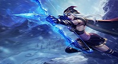
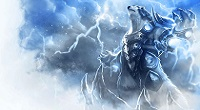
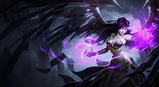
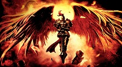
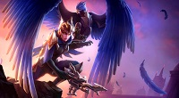
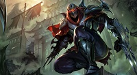
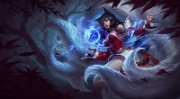
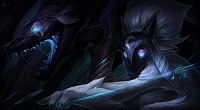

Champion Spotlights
With each arrow she fires from her ancient ice-enchanted bow, Ashe proves she is a master archer. She chooses each target carefully, waits for the right moment, and then strikes with power and precision. It is with this vision and focus that she pursues her goal of uniting the tribes of the Freljord and forging them into a mighty nation.
The unforgiving northern reaches of the Freljord are home to the Ursine, a fierce and warlike race that has endured the barren tundra for thousands of years. Their leader is a furious adversary who commands the force of lightning to strike fear within his foes: Volibear. Both a warrior and a mystic, Volibear seeks to defend the ancient ways and the warrior spirit of his tribe.
Morgana was one who fought against what she perceived as the tyranny of her kind, and for that she was branded "fallen". Morgana was not innocent, having plumbed forgotten ways to gather forbidden might to become a powerful mistress of the black arts. This goal was driven by her obsession to defeat the general of the opposition's army - her sister, Kayle.
Kayle In a world far away where an ancient war still rages, Kayle was a great hero - the strongest of an immortal race committed to destroying evil wherever it could be found. For ten thousand years, Kayle fought tirelessly for her people, wielding her flaming sword forged before time itself.She shielded her delicate features beneath her enchanted armor, the sole remaining masterpiece of an extinct race of craftsmen.
Quinn and Valor are an elite ranger team. With crossbow and claw, they undertake their nation's most dangerous missions deep within enemy territory, from swift reconnaissance to lethal strikes. The pair's unbreakable bond is deadly on the battlefield, leaving opponents blind and riddled with arrows long before they realize who they're fighting: not one, but two Demacian legends.
Zed is the first ninja in 200 years to unlock the ancient, forbidden ways. He defied his clan and master, casting off the balance and discipline that had shackled him all his life. Zed now offers power to those who embrace knowledge of the shadows, and slays those who cling to ignorance.
Unlike other foxes that roamed the woods of southern Ionia, Ahri had always felt a strange connection to the magical world around her, a connection that was somehow incomplete. Deep inside, she felt the skin she had been born into was an ill fit for her and dreamt of one day becoming human. Her goal seemed out of reach, until she happened upon the wake of a human battle.
Separate, but never parted, Kindred represents the twin essences of death. Lamb’s bow offers a swift release from the mortal realm for those who accept their fate. Wolf hunts down those who run from their end, delivering violent finality within his crushing jaws. Though interpretations of Kindred’s nature vary across Runeterra, every mortal must choose the true face of their death.